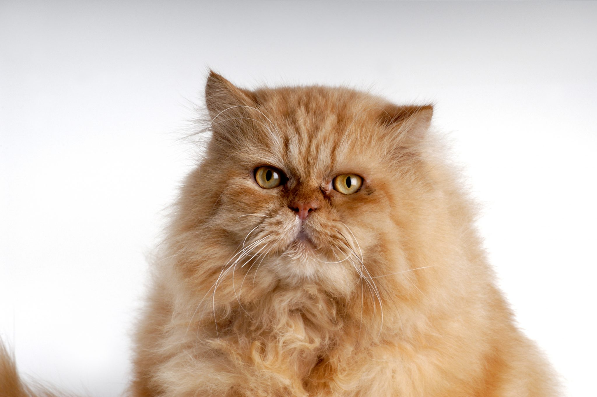

TODO: Transforme o texto "Voltar" abaixo em hiperlink que leva o usuário para a página com o sumário de todos os gatos
Voltar
O gato Persa é, para muitos, sinônimo de gato de luxo, com seu porte tranquilo e pelagem longa. Por isso, é considerado o “rei das exposições”, por ser uma raça de gato peludo e majestosa com focinho plano.